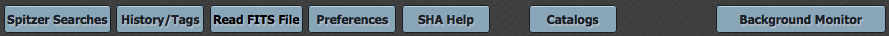

The contents of this file follow the menu options (e.g., basically the
blue tabs across the top, under the IRSA menu) and major features of
the tool in the order in which you might encounter them.

Contents of page/chapter:
+Spitzer Searches -- The basics of searching
+History/Tags -- Your search history and tag history
+Read FITS file -- Reading in FITS files
+Preferences -- Setting and using your preferences
+Help -- Getting more help
+Catalogs -- Retrieving and using catalogs
+Downloads -- Downloading data and the Background
Monitor
For an introduction to terminology, please see this summary in the overview section.
Spitzer Searches -- The basics of searching
Searching the archive is straightforward, and a wide variety of
options are available on the left hand side of the search window. The
search window can be retrieved after a search by clicking on the blue
"Spitzer Searches" tab near the top. The position search is the most
commonly used search, and appears by default. Target names can be
automatically resolved into coordinates using NED or Simbad, or you
can specify coordinates, and you specify the search radius. There are
many more search options, described in detail on the section on searching.
Spitzer observations can cover large areas or, by design, multiple targets. If you are interested in just portions of the larger observation, you can choose to have just individual data products returned -- e.g., just the observations that went into the portion of the sky for which you searched -- or you can return the products for the whole AOR.
You can refine your search for observations by instrument or by wavelength.
The search results appear in up to seven tabs: AORs, Level 1 (BCD), Level 2 (PBCD), IRS Enhanced Products, Super Mosaics, Source Lists and Contributed Enhanced Products. Each tab provides a different look at the data retrieved by your search. (See the section on understanding your search results for more information.)
You may wish to impose additional filters on your search results; see the section on filtering for more information on filtering.
The tabs on the far right of the SHA results page aid in visualizing exactly what data have been retrieved. You can examine individual data frames, or see what parts of the sky are covered by the retrieved AORs. See the section on the Details pane for more information on what is in each tab, and the section on visualization for more information on the options within the visualization tabs.
You can also search all of the SSC-developed Enhanced Products or the Contributed Enhanced Products returned to the SSC and IRSA (largely contributed by the Legacy teams). Each team delivered different products, ranging from images, catalogs, and spectra to images beyond the Spitzer bands. See the enhanced products discussion in the searching section for more information.
After deciding what data to download, click the checkboxes on the far left of each row to pick specific data files to download, and then click "Prepare Download" to begin the packaging and downloading process. A pop-up window will appear in order to define exactly what kinds of data you would like to have packaged up. Clicking OK initializes this process.
The Background Monitor appears as a link in the upper right of your window to keep track of the data download. A pop-up window can be called up by clicking the "Background Monitor" link. You can watch your data being packaged, and when the data are available for download, it will update that window, providing a link (or more than one link) for downloading the packaged data. (More on data downloads.)
Important note: don't log in while it is preparing a download! If you log in during a download, as far as the system is concerned, you have changed identities (from 'anonymous' to 'jones', say), and as a result it does not complete preparing the download.
You can resubmit the search (see buttons at top left of the search history tab), remove the search from your history, or save the search as a favorite search to which you can return at a later time/date. (However, you do need to be logged in when you save the search -- more on user registration.)
However, many papers use many AORs. Data tagging allows you to customize the data set you use so that the link back from ADS (or embedded in your paper itself) refers to a single unique identifier that corresponds to all your data. (That is, a single identifier, as opposed to a potentially long list of AORKEYs.)
Once you have established a search that you like, you can click on the "Tag It" icon in the top right of the search results tabs. It will then ask for a nickname, and then return the tag name for insertion into your paper as well as a direct URL you can distribute.
Once you have tagged a search, it appears in the "Tags" tab.
Selecting the "Read FITS File" option from the blue tabs on top of the SHA window results in a large visualization window, into which you can load images from a variety of sources. A pop-up window appears with the available image options. Please see the Visualization section for much more information about the visualization environment, specifically what the icons mean. (Hovering with your mouse over an icon will also reveal a "tool tip" to help figure out what each icon does.)
Preferences -- Setting and using your preferences
The preferences tab provides a few ways to customize your
experience. The window that appears when you click that option
gives you by default a choice of the number of entries that appear in
the table by default, allows you to enter your email for an email
notification when data are packaged, and allows you to select the
default for distance measurements.
Log in before setting these preferences, and they will be preserved for you the next time you log in.
Getting Help
The "SHA Help" blue tab leads you into this online help, as does
"Spitzer Help" from under the "Help" in the IRSA menu on the top
of the SHA page. You can also download a PDF version of this manual;
look at the top of the help window for the "View PDF" link.
For an even faster overview, see the Quick-Start Guide. For more detailed information on any of these topics, see the rest of the more detailed online help.
Please see the section on more help for more information on getting more help, or contacting us.
Catalogs -- Retrieving and using catalogs
(Note that this blue tab is only available after you have performed at
least one search, e.g., you have something on which to overlay the
catalog.)
You can choose from any of a wide variety of catalogs to load in preparation for overlaying on your visualized data. First we cover catalogs you can download from IRSA, then we cover using your own catalogs. There is much more information in the catalogs section as well.
By clicking on the "Catalog" menu option, a window appears with several options, as follows.
The target name is by default the one for the current search/AOR with which you are working. If you would like to change the center of the search for purposes of the catalog search, click on "modify target" and enter the new information. All of the same basic parameters as for a position search of the SHA appear.
You can then choose catalogs based first on the "project" under which they are housed at IRSA, such as 2MASS, IRAS, Spitzer (includes delivered enhanced product catalogs), MSX, etc. The options under the "category" and the specific clickable catalog on the right change according to the project you have selected. A short description is provided for each of the catalogs, with links for more information.
You can also set restrictions on specific columns by clicking on "Set Column Restrictions". A new window will open up with the available column names in the catalog, and you can filter what is returned, with the same basic approach as in filtering your search results in the rest of the SHA. All the restrictions are AND operators.
Click on "Search" to initiate the search. NOTE THAT the search may take a long time to return, especially if you have asked for a large catalog, and you may think that nothing has happened, but be patient and eventually it will either spin off to the background monitor, or return a tab.
If the catalog search is successful, it will return the results in a tab of its own, in an interface similar to the other data tabs. You can save the catalog to your local disk for future use.
If it does spin off to the background monitor, the monitor will dynamically update to reflect its status, and will let you know when the catalog is ready to download or display. Open the background monitor and click on the catalog name to load it into a tab in the SHA.
Use large search radii with caution! Be sure you understand how many sources you are likely to retrieve. Searches that retrieve more rows will take longer.
Loading your own catalogs By clicking on the blue "Catalogs" tab, you are by default dropped into the interface for searching for new catalogs. However, you can pick another tab from the top left, "Load Catalog", to load your own catalog.
Your catalog needs to be in IPAC table format  .
.
There is more information in the catalogs section.
Downloads - Downloading data and the Background
Monitor
On any search results page, you can click the checkboxes on the far
left of each row to pick specific data files to download, and then
click "Prepare Download" (near the top of the column of checkboxes) to
begin the packaging (and downloading) process. A pop-up window will
appear in order to define exactly what kinds of data you would like to
have packaged up. Clicking OK initializes this process.
To select all of the data you have displayed, click on the checkbox at the top of the column of checkboxes, and all of the rows are automatically clicked (even those on subsequent pages). Then click "Prepare Download" to initiate the packaging process.
The packaging process spins off into the background monitor, which keeps track of its progress and notifys you when the downloads are complete. You can choose to have an email sent to you to let you know when things are ready. If you have just a few zip files, you can click to download them, but especially if you have many files, you may want to have the SHA generate a downloading script for you to download them all automatically.
Note that you control where the data are saved on your disk through your browser; your browser may be configured to store all downloads in a particular location on your disk.
For more information, see the section on downloads.